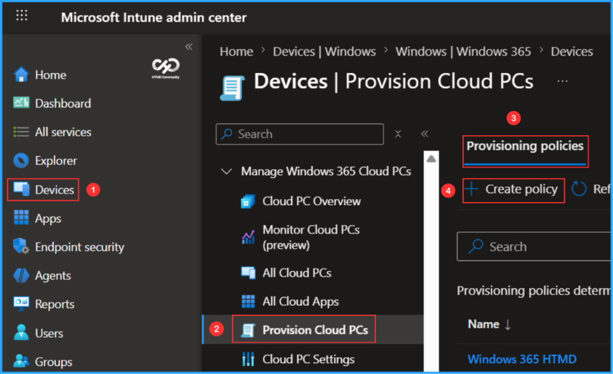
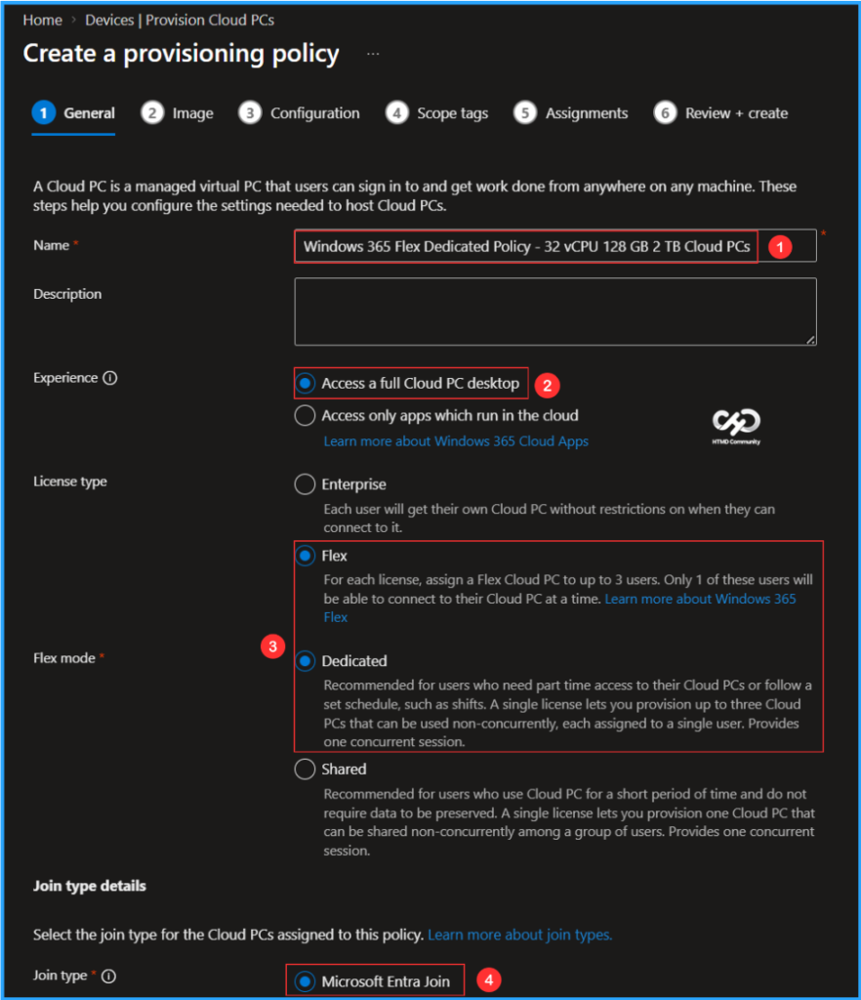
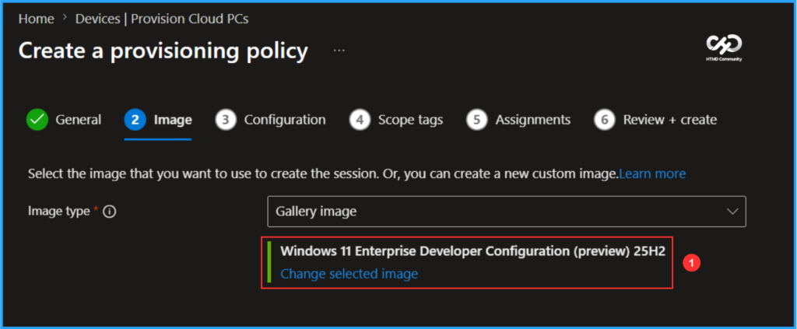
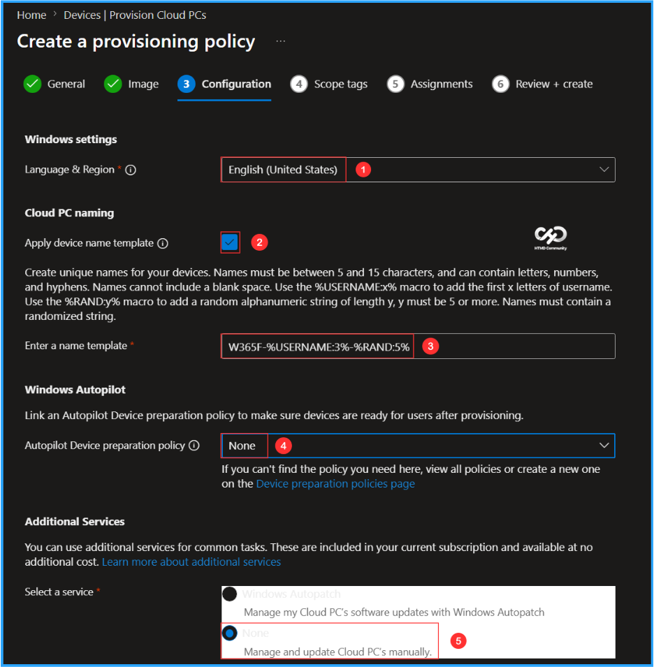
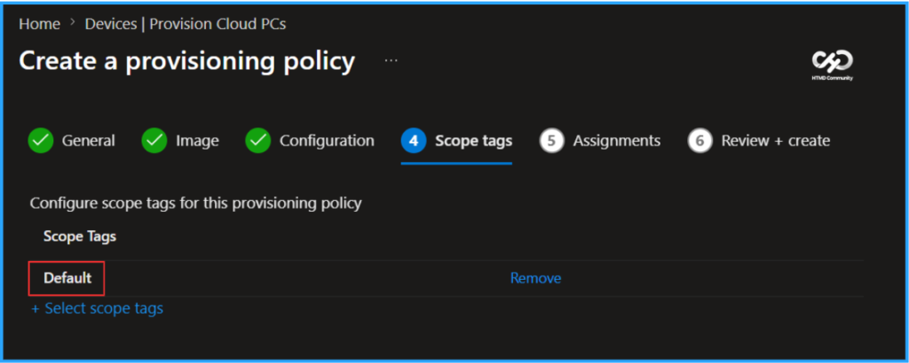
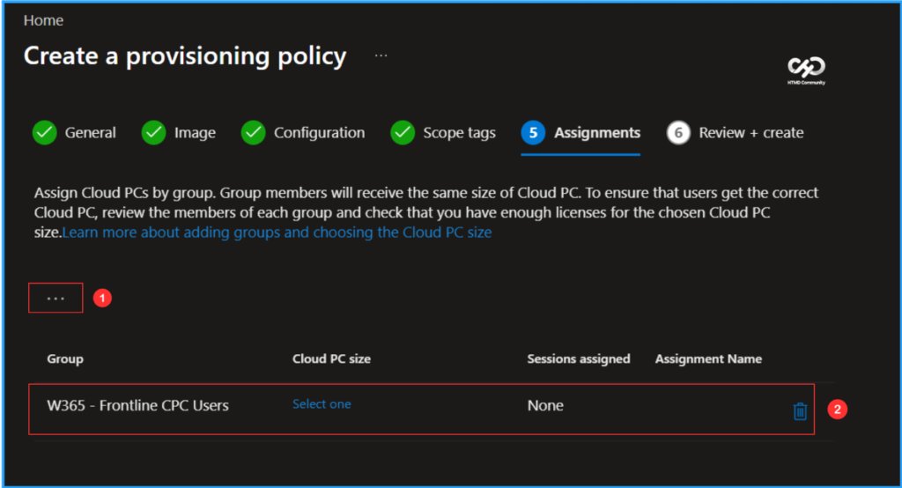
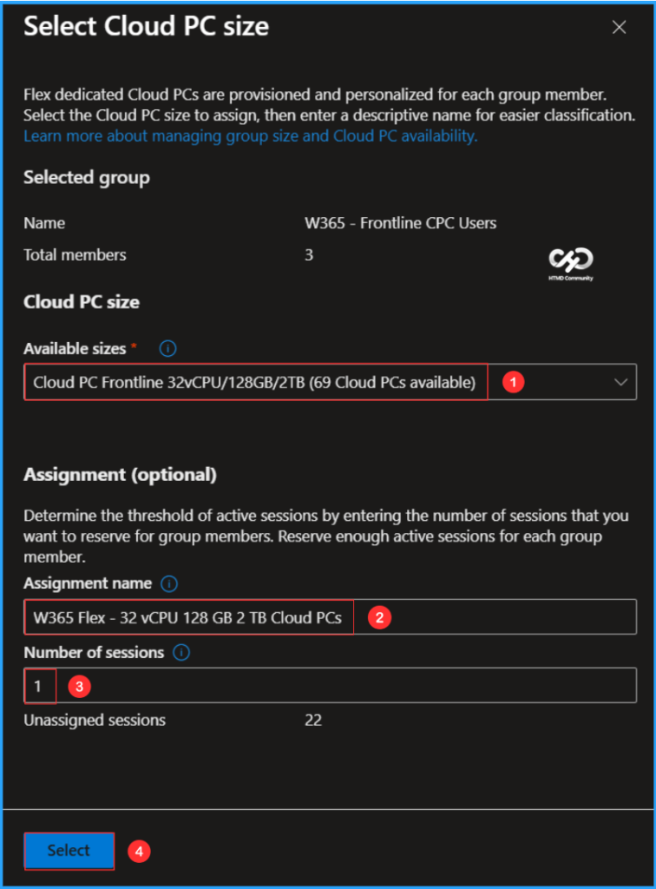
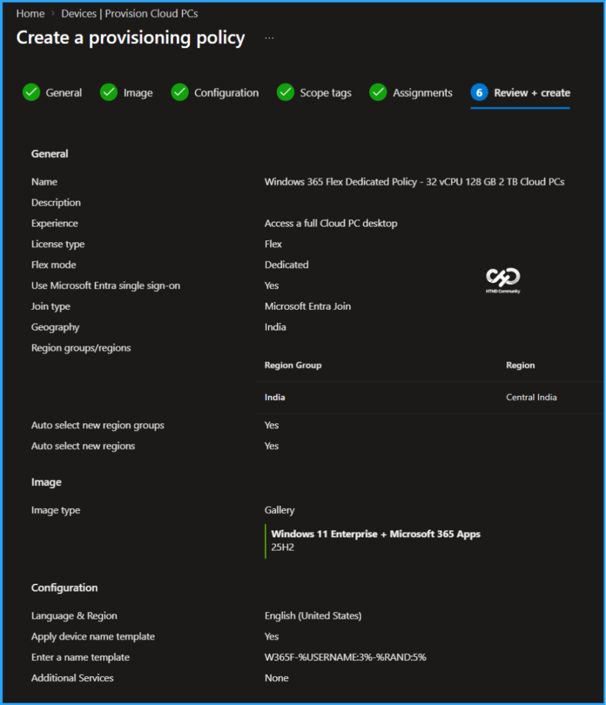
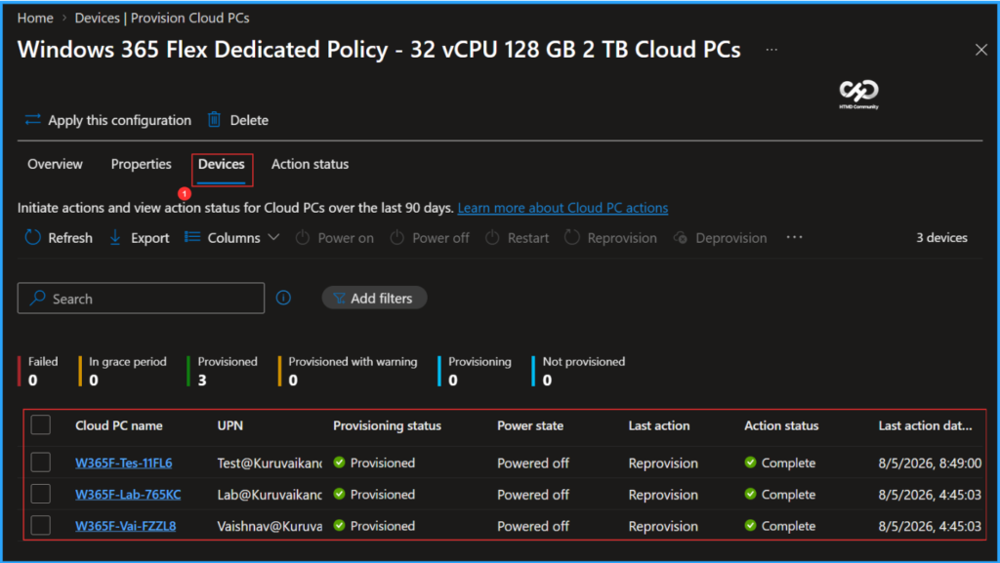
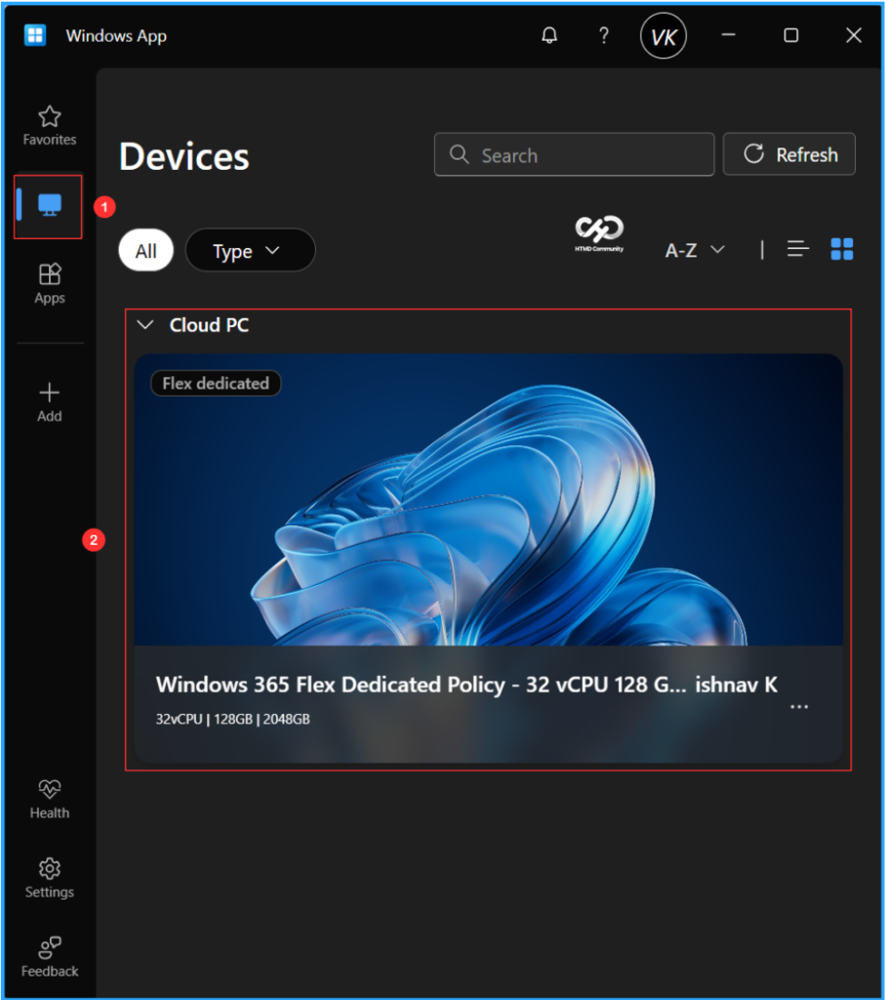

Key Takeaways
- 32 vCPU Cloud PC is now available for high-performance workloads.
- Designed for development, simulations, data-intensive tasks, and other demanding workloads.
- Provides faster processing and improved performance for complex applications.
- Reduces reliance on high-end local hardware with more powerful Cloud PC configurations.
In this article, I will discuss how to provision the newly introduced Windows 365 32 vCPU Cloud PC using Microsoft Intune. Windows 365 now offers a new 32 vCPU Cloud PC size, delivering more processing power for demanding and resource-intensive workloads. It is well-suited for development, simulations, and data-heavy applications, helping improve performance and reduce processing time. This gives organizations more flexibility to support advanced workloads without relying heavily on high-end local hardware.
License Requirement
Before provisioning the Cloud PC, ensure you have purchased the Windows 365 Newly Introduced 32 vCPU license for your tenant. Please refer to my blog post: Purchase Windows 365 Flex High Performance Cloud PC Free Trial License. In this instance, I acquired a trial license for Windows 365 Flex.
| Product Name | Purchased Quantity |
|---|---|
| Windows 365 Frontline 32 vCPU, 128 GB, 2 TB Trial | 25 |
Create a Windows 365 Newly Introduced 32 vCPU Cloud PC
To create a Windows 365 Newly Introduced 32 vCPU Cloud PC, sign in to the Microsoft Intune Admin Center using your administrator credentials.
- Navigate to > Devices > Manage Windows 365 Cloud PCs > Provision Cloud PCs
- Click on Provisioning policies > +Create policy

In the General tab, you can now add the following settings. Keep in mind that a Cloud PC is a managed virtual PC that users can sign in to get work done from anywhere on any machine. These steps help you configure the settings needed to host Cloud PCs.
- Name:
Windows 365 Flex Dedicated Policy – 32 vCPU 128 GB 2 TB Cloud PCs - Description: Optional
- Experience: Access a full Cloud PC desktop
- License type: Flex
- Frontline type: Dedicated
- Join type: Microsoft Entra Join
- Network: Microsoft hosted network
- Geography: India
- Region groups/regions: India/Central India
- Use Microsoft Entra single sign-on: Yes (Check the box)

You can choose an existing image to create the session or create a new custom image if available. I will select the latest available Gallery image, which is Windows 11 Enterprise + Microsoft 365 Apps 25H2.

The next tab focuses on Windows settings, Cloud PC naming, Windows Autopilot and Additional Services configuration. You can select the options listed below.
- Language & Region: English (United States)
- Apply device name template: Yes (Check the box)
- Enter a name template: W365F-%USERNAME:3%-%RAND:5%
- Autopilot Device preparation policy: None
- Select a service: None

On the next page, keep the Scope tags set to Default. If your tenant has custom scope tags, select them based on your policy needs, and then click Next.

In this section, select the group that will receive Cloud PCs. I will assign the policy to the W365 – Frontline CPC Users group, which consists of three different users in my organization. To do this, click on Add groups and choose the appropriate user group. To set the Cloud PC size, click on the Select one hyperlink.

Now it will open the Select Cloud PC Size pane. Choose the Cloud PC size; you can find the available sizes in the drop-down menu based on your Windows 365 Flex license. Here, I am selecting the following options.
Note: The Windows 365 Frontline in the Microsoft 365 Admin Center has not yet been renamed to Windows 365 Flex.
- Available sizes: Cloud PC Frontline 32vCPU/128GB/2TB (69 Cloud PCs available)
- Assignment name: W365 Flex – 32 vCPU 128 GB 2 TB Cloud PCs
- Number of sessions: 1

On the Review + create page, review all settings for the Windows 365 Flex Dedicated Policy – 32 vCPU 128 GB 2 TB Cloud PCs Provisioning Policy. After confirming, click Create to deploy the policy.

Monitor the Windows 365 Newly Introduced 32 vCPU Cloud PC Deployment
The newly created Windows 365 Flex Dedicated Policy – 32 vCPU 128 GB 2 TB Cloud PCs Provisioning Policy has been deployed to the W365 – Frontline CPC Users. Please allow around 15-20 minutes for the policy to provision Windows 365 Frontline Cloud PCs in dedicated mode. To monitor the status of the policy deployment, follow the steps outlined below in the Intune Portal.
- Navigate to Devices > Manage Windows 365 Cloud PCs> Provision Cloud PCs > Find the Windows 365 Flex Dedicated Policy – 32 vCPU 128 GB 2 TB Cloud PCs > Select Devices Tab
According to our configuration, three Flex Cloud PCs with the device names W365F-Tes-11FL6, W365F-Lab-765KC and W365F-Vai-FZZL8 have been successfully provisioned and assigned to three different users in the targeted group.

End User Experience using Windows App
It’s time to evaluate the end-user experience of the newly provisioned Windows 365 Flex Cloud PC in dedicated mode. Start by opening the Windows App and signing in using the credentials assigned to the Cloud PC user. In the left pane, click on Devices. The assigned Cloud PC should appear in the list. Double-click on the Flex Cloud PC. You can proceed by clicking Connect to use it.

Need Further Assistance or Have Technical Questions?
Join the LinkedIn Page and Telegram group to get the latest step-by-step guides and news updates. Join our Meetup Page to participate in User group meetings. Also, join the WhatsApp Community to get the latest news on Microsoft Technologies. We are there on Reddit as well.
Author
Vaishnav K has over 12 years of experience in SCCM, Intune, Modern Device Management, and Automation Solutions. He writes and shares knowledge about Microsoft Intune, Windows 365, Azure, Entra, PowerShell Scripting, and Automation. Check out his profile on LinkedIn.